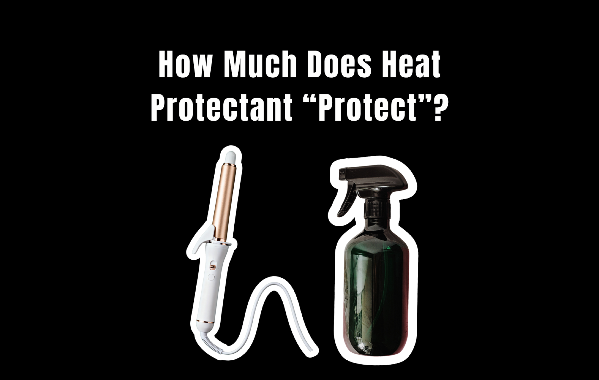
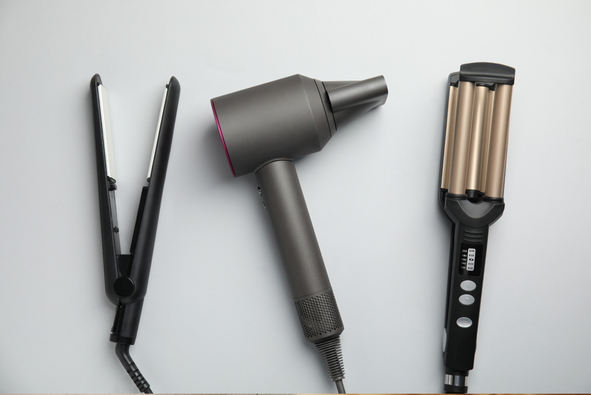

Hair protectants sound almost too good to be true: spray something on your hair, apply 400°F heat, and somehow your hair stays protected. But how much protection are you actually getting?
Heat protectants have become a standard step in many hair routines. They promise to shield strands from blow dryers, curling irons, and flat irons while preventing breakage, split ends, dryness, and other visible signs of damage. But there is an important distinction between reducing damage and preventing it entirely.

So, do heat protectants actually work? And what does a claim like “protects up to 450°F” really mean? We looked at what these products are designed to do, how heat damages the hair, and where the marketing claims may get ahead of the science.
What Is a Hair Protectant Supposed to Do?
Hair protectants are formulated to create some form of protection between the hair fiber and an external stressor, most commonly heat. Many formulas contain ingredients such as silicones, polymers, proteins, oils, and conditioning agents. Depending on the formula, these ingredients can coat the hair, improve lubrication, reduce friction, and help distribute heat more evenly across the strand.
The goal isn’t necessarily to make hair immune to heat. Instead, a protectant can help reduce the amount or severity of damage caused by styling. That distinction matters.
Hair is made primarily of keratin, a protein that gives it much of its strength and structure. Excessive heat can alter the structure of the hair, contribute to moisture loss, weaken the cuticle, and eventually make strands more prone to breakage. A protective product may help minimize some of these effects — but it can’t completely eliminate them.
How Heat Damages Hair
Hair doesn’t have a natural mechanism for repairing itself once the fiber has been significantly damaged.
When high temperatures are repeatedly applied to the hair, several things can happen. The cuticle can become rougher and more irregular, the hair can lose moisture, and the internal protein structure can be affected. The higher the temperature and the longer the hair is exposed to it, the greater the potential for damage.
This is why a flat iron used at a high temperature is different from briefly using a warm blow dryer. Heat intensity, contact time, frequency, and the condition of the hair all matter. Hair that has already been bleached, chemically treated, or otherwise compromised may also be more vulnerable.
So where does a heat protectant come in?
Do Heat Protectants Really Reduce Damage?
Yes — but “protect” doesn’t mean “prevent.”
Research into heat-protective hair products has found that certain formulations can reduce some of the physical and structural damage associated with thermal styling.
Film-forming ingredients are particularly important. By coating the hair fiber, they can change how heat and moisture interact with the strand and provide lubrication that reduces friction during styling. Some ingredients may also help reduce the loss of moisture from the hair when it is exposed to heat. But the effectiveness depends heavily on the specific formulation.
There isn’t one universal ingredient that makes a product heat-proof. A spray labeled “heat protectant” can contain a very different combination of ingredients from another product carrying the same claim. That means simply seeing “heat protection” on the bottle doesn’t tell you exactly how much protection you’re getting.
The Temperature Test
The number on your styling tool matters. A flat iron set to 400°F isn’t automatically safe because you’ve applied a heat protectant first. The protectant may reduce damage, but the hair is still being exposed to an extremely high temperature.
Think of it as a barrier rather than an invisible shield. Lowering the temperature of your styling tool reduces the amount of stress placed on the hair in the first place. Using a protectant in addition to lowering the temperature can provide another layer of protection. The same principle applies to blow-drying. Holding a dryer in one place for an extended period creates more concentrated heat exposure than continuously moving it around the hair. Distance from the hair also matters.
In other words, how you use heat can be just as important as what you put on your hair beforehand.
What Does “Protects Up to 450°F” Actually Mean?
This is where beauty marketing can become confusing. When a product says it provides heat protection “up to 450°F,” it is easy to interpret that as: “My hair can safely withstand 450°F if I use this product.”
That’s not necessarily what the claim means.
A temperature claim generally indicates that the product has been tested under particular conditions and demonstrated some degree of protective effect at that temperature. It does not mean that the hair experiences zero damage at 450°F.
It also doesn’t mean that every person’s hair will respond identically. Any of the following can influence the result:
- Hair thickness and porosity
- Chemical processing history
- Moisture content
- How much product you apply
- Styling technique
- Exposure time
A better way to read a 450°F claim: the product may help reduce heat-related damage under tested conditions — not make 450°F styling harmless.
Can Hair Protectants Prevent Split Ends and Breakage?
This is where expectations should be lowered. A good protectant can help reduce the factors that contribute to visible damage, but it can’t permanently prevent split ends or guarantee that hair won’t break. Once a strand has split, a product can’t permanently fuse it back together.
Conditioning ingredients can temporarily improve the appearance and feel of damaged hair, making strands smoother and reducing friction. This can make hair feel healthier and potentially reduce additional mechanical stress. But that’s different from reversing structural damage.
The same principle applies to breakage. A protectant may help reduce the amount of damage caused by heat, but using a protective product doesn’t cancel out repeated high-temperature styling.
Heat Protectant vs. Hair Oil vs. Leave-In Conditioner
Not every product that makes hair feel smoother is necessarily a dedicated heat protectant. Hair oils can provide lubrication and form a coating over the strand. Leave-in conditioners can improve moisture retention, softness, and manageability. Some may also contain ingredients specifically designed to provide thermal protection.
| Product | What it’s built to do | Thermal protection? |
|---|---|---|
| Heat protectant | Form a film that reduces friction and moderates how heat and moisture interact with the strand | Formulated and tested for it |
| Hair oil | Lubricate and coat the strand | Not necessarily — depends entirely on the formula |
| Leave-in conditioner | Improve moisture retention, softness, and manageability | Only if the formula specifically includes it |
But these categories aren’t interchangeable. A product formulated and tested for heat protection is generally a better choice when your primary concern is thermal styling.
That doesn’t mean oils or conditioners are useless. They can play an important role in keeping hair conditioned and reducing friction. They simply shouldn’t automatically be assumed to provide the same level of thermal protection as a product specifically formulated for that purpose.
The Biggest Mistake: Using Protection as Permission
The biggest misconception about heat protectants may not actually be about the products themselves. It’s about what people think they’re allowed to do once they’ve applied one.
A heat protectant can make it tempting to think: “I used protection, so I can turn the flat iron all the way up.”
But protection doesn’t work that way.
- If you can achieve the same hairstyle at a lower temperature, that’s generally less stress on the hair
- If you can make one pass with a flat iron instead of repeatedly going over the same section, that’s less exposure
- If you can reduce how frequently you use hot tools, that’s less cumulative damage
A protectant is one part of a heat-safe routine — not permission to ignore everything else.
So, Do Hair Protectants Actually Work?
Yes, but not in the way beauty marketing sometimes makes it sound. Hair protectants can reduce some of the damage caused by thermal styling. Certain ingredients can coat the hair, reduce friction, help manage moisture loss, and provide a degree of protection from high temperatures.
But they aren’t a force field.
- They don’t make 400°F or 450°F styling harmless
- They don’t permanently repair split ends
- They can’t completely prevent damage from frequent, prolonged, or excessive heat exposure
The most realistic way to think about a heat protectant is simple: it can reduce the damage. It can’t erase the risk.
Using a protectant, choosing the lowest effective temperature, limiting how often you use hot tools, and avoiding repeated passes over the same section of hair can all work together to keep heat-related damage under control.
Truth Behind Beauty Verdict: ⚠️ Partly True
Heat protectants do something real. Film-forming ingredients can reduce friction, moderate moisture loss, and cut down some of the structural damage that comes with thermal styling. That part holds up.
What doesn’t hold up is the way the claims get read. “Protects up to 450°F” is a tested-conditions statement, not a safety rating, and no spray fuses a split end back together. The product is one layer of a heat-safe routine — temperature, contact time, and frequency are doing at least as much work.
Because the best heat protectant isn’t the product that promises to make your hair invincible.
It’s the one that helps you do less damage in the first place.